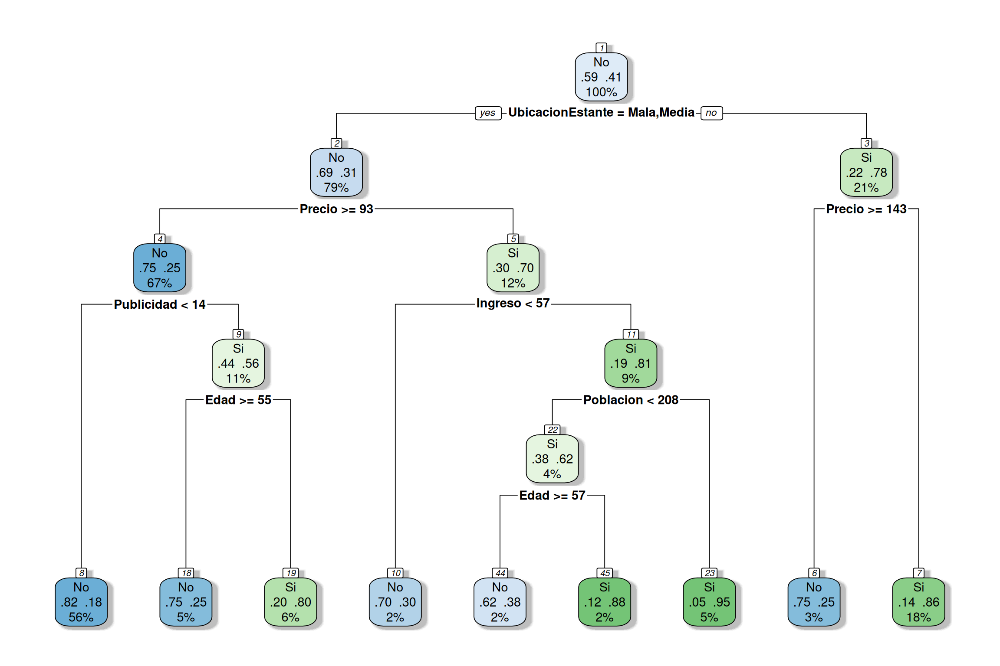

Los árboles de decisión permiten representar de manera visual cómo cambia la probabilidad de un evento cuando se incorpora nueva información.
En este ejercicio se utiliza una situación de mercadeo para estudiar la probabilidad de que un punto de venta presente ventas altas, teniendo en cuenta características relacionadas con la ubicación del producto, el precio, la publicidad y las condiciones del mercado.
El propósito es conectar los conceptos de:
Si los paquetes no se encuentran instalados, ejecute una sola vez:
install.packages("ISLR2")
install.packages("rpart")
install.packages("rpart.plot")Cargamos los paquetes requeridos.
library(ISLR2)
library(rpart)
library(rpart.plot)Utilizaremos la base Carseats, disponible en el paquete
ISLR2.
data(Carseats)
dim(Carseats)[1] 400 11head(Carseats) Sales CompPrice Income Advertising Population Price ShelveLoc Age Education
1 9.50 138 73 11 276 120 Bad 42 17
2 11.22 111 48 16 260 83 Good 65 10
3 10.06 113 35 10 269 80 Medium 59 12
4 7.40 117 100 4 466 97 Medium 55 14
5 4.15 141 64 3 340 128 Bad 38 13
6 10.81 124 113 13 501 72 Bad 78 16
Urban US
1 Yes Yes
2 Yes Yes
3 Yes Yes
4 Yes Yes
5 Yes No
6 No YesLa base contiene 400 puntos de venta y 11 variables originales. Cada fila representa una tienda en la que se comercializan asientos infantiles para automóviles.
Las variables originales son:
| Variable original | Nombre en español | Descripción |
|---|---|---|
Sales |
Ventas |
Ventas unitarias en miles de unidades |
CompPrice |
PrecioCompetencia |
Precio cobrado por un competidor en cada ubicación |
Income |
Ingreso |
Nivel de ingreso de la comunidad |
Advertising |
Publicidad |
Presupuesto local de publicidad |
Population |
Poblacion |
Tamaño de la población de la región |
Price |
Precio |
Precio cobrado por la empresa |
ShelveLoc |
UbicacionEstante |
Calidad de la ubicación del producto en la estantería |
Age |
Edad |
Edad promedio de la población local |
Education |
Educacion |
Nivel de educación de la población |
Urban |
ZonaUrbana |
Indica si la tienda se encuentra en zona urbana |
US |
EstadosUnidos |
Indica si la tienda se encuentra en Estados Unidos |
Antes de realizar el análisis traduciremos tanto los nombres de las variables como las categorías de las variables cualitativas.
Creamos una copia de la base para conservar los datos originales.
datos <- Carseats
names(datos) <- c(
"Ventas",
"PrecioCompetencia",
"Ingreso",
"Publicidad",
"Poblacion",
"Precio",
"UbicacionEstante",
"Edad",
"Educacion",
"ZonaUrbana",
"EstadosUnidos"
)
datos$UbicacionEstante <- factor(
datos$UbicacionEstante,
levels = c("Bad", "Medium", "Good"),
labels = c("Mala", "Media", "Buena")
)
datos$ZonaUrbana <- factor(
datos$ZonaUrbana,
levels = c("No", "Yes"),
labels = c("No", "Si")
)
datos$EstadosUnidos <- factor(
datos$EstadosUnidos,
levels = c("No", "Yes"),
labels = c("No", "Si")
)
head(datos) Ventas PrecioCompetencia Ingreso Publicidad Poblacion Precio UbicacionEstante
1 9.50 138 73 11 276 120 Mala
2 11.22 111 48 16 260 83 Buena
3 10.06 113 35 10 269 80 Media
4 7.40 117 100 4 466 97 Media
5 4.15 141 64 3 340 128 Mala
6 10.81 124 113 13 501 72 Mala
Edad Educacion ZonaUrbana EstadosUnidos
1 42 17 Si Si
2 65 10 Si Si
3 59 12 Si Si
4 55 14 Si Si
5 38 13 Si No
6 78 16 No SiAhora toda la interpretación puede realizarse directamente en español.
str(datos)'data.frame': 400 obs. of 11 variables:
$ Ventas : num 9.5 11.22 10.06 7.4 4.15 ...
$ PrecioCompetencia: num 138 111 113 117 141 124 115 136 132 132 ...
$ Ingreso : num 73 48 35 100 64 113 105 81 110 113 ...
$ Publicidad : num 11 16 10 4 3 13 0 15 0 0 ...
$ Poblacion : num 276 260 269 466 340 501 45 425 108 131 ...
$ Precio : num 120 83 80 97 128 72 108 120 124 124 ...
$ UbicacionEstante : Factor w/ 3 levels "Mala","Media",..: 1 3 2 2 1 1 2 3 2 2 ...
$ Edad : num 42 65 59 55 38 78 71 67 76 76 ...
$ Educacion : num 17 10 12 14 13 16 15 10 10 17 ...
$ ZonaUrbana : Factor w/ 2 levels "No","Si": 2 2 2 2 2 1 2 2 1 1 ...
$ EstadosUnidos : Factor w/ 2 levels "No","Si": 2 2 2 2 1 2 1 2 1 2 ...Antes de estudiar probabilidades y construir el árbol, conviene conocer algunas características de los datos.
summary(datos) Ventas PrecioCompetencia Ingreso Publicidad
Min. : 0.000 Min. : 77 Min. : 21.00 Min. : 0.000
1st Qu.: 5.390 1st Qu.:115 1st Qu.: 42.75 1st Qu.: 0.000
Median : 7.490 Median :125 Median : 69.00 Median : 5.000
Mean : 7.496 Mean :125 Mean : 68.66 Mean : 6.635
3rd Qu.: 9.320 3rd Qu.:135 3rd Qu.: 91.00 3rd Qu.:12.000
Max. :16.270 Max. :175 Max. :120.00 Max. :29.000
Poblacion Precio UbicacionEstante Edad
Min. : 10.0 Min. : 24.0 Mala : 96 Min. :25.00
1st Qu.:139.0 1st Qu.:100.0 Media:219 1st Qu.:39.75
Median :272.0 Median :117.0 Buena: 85 Median :54.50
Mean :264.8 Mean :115.8 Mean :53.32
3rd Qu.:398.5 3rd Qu.:131.0 3rd Qu.:66.00
Max. :509.0 Max. :191.0 Max. :80.00
Educacion ZonaUrbana EstadosUnidos
Min. :10.0 No:118 No:142
1st Qu.:12.0 Si:282 Si:258
Median :14.0
Mean :13.9
3rd Qu.:16.0
Max. :18.0 Las ventas pueden resumirse mediante:
c(
Media = mean(datos$Ventas),
Mediana = median(datos$Ventas),
Desviacion = sd(datos$Ventas),
Minimo = min(datos$Ventas),
Maximo = max(datos$Ventas)
) Media Mediana Desviacion Minimo Maximo
7.496325 7.490000 2.824115 0.000000 16.270000 También podemos observar cómo se distribuyen los puntos de venta según la ubicación del producto en la estantería.
table(datos$UbicacionEstante)
Mala Media Buena
96 219 85 prop.table(table(datos$UbicacionEstante))
Mala Media Buena
0.2400 0.5475 0.2125 La variable UbicacionEstante resulta particularmente
interesante desde el punto de vista de mercadeo, pues representa la
calidad de la exhibición del producto dentro del establecimiento.
Para convertir el problema en uno de clasificación, definiremos como ventas altas aquellas superiores a 8 mil unidades.
Sea:
\[ A=\{\text{el punto de venta presenta ventas altas}\} \]
Operacionalmente:
\[ A=\{\text{Ventas}>8\} \]
Creamos la variable VentaAlta.
datos$VentaAlta <- ifelse(
datos$Ventas > 8,
"Si",
"No"
)
datos$VentaAlta <- factor(
datos$VentaAlta,
levels = c("No", "Si")
)
table(datos$VentaAlta)
No Si
236 164 La probabilidad marginal representa la probabilidad de un evento sin disponer de información adicional.
En este caso:
\[ P(A)=P(\text{VentaAlta=Si}) \]
tabla_venta <- table(datos$VentaAlta)
tabla_venta
No Si
236 164 prop.table(tabla_venta)
No Si
0.59 0.41 P_A <- mean(datos$VentaAlta == "Si")
P_A[1] 0.41Interpretación. El resultado anterior corresponde a la proporción de los 400 puntos de venta que presentan ventas superiores a 8 mil unidades. Esta es nuestra probabilidad inicial antes de conocer características adicionales de una tienda.
Consideremos ahora el evento:
\[ B=\{\text{UbicacionEstante=Buena}\} \]
Construimos una tabla de contingencia.
tabla <- table(
Ubicacion = datos$UbicacionEstante,
VentaAlta = datos$VentaAlta
)
tabla VentaAlta
Ubicacion No Si
Mala 82 14
Media 135 84
Buena 19 66Las probabilidades conjuntas son:
round(prop.table(tabla), 4) VentaAlta
Ubicacion No Si
Mala 0.2050 0.0350
Media 0.3375 0.2100
Buena 0.0475 0.1650En particular:
\[ P(A\cap B) = P(\text{VentaAlta=Si}\cap\text{UbicacionEstante=Buena}) \]
P_A_inter_B <- mean(
datos$VentaAlta == "Si" &
datos$UbicacionEstante == "Buena"
)
P_A_inter_B[1] 0.165Interpretación. Esta probabilidad representa la posibilidad de seleccionar aleatoriamente un punto de venta que simultáneamente tenga una buena ubicación del producto y presente ventas altas.
Ahora incorporamos información.
La pregunta es:
Si sabemos que el producto tiene una buena ubicación en la estantería, ¿cuál es la probabilidad de que el punto de venta presente ventas altas?
Matemáticamente:
\[ P(A\mid B) = P(\text{VentaAlta=Si}\mid\text{UbicacionEstante=Buena}) \]
round(prop.table(tabla, margin = 1), 4) VentaAlta
Ubicacion No Si
Mala 0.8542 0.1458
Media 0.6164 0.3836
Buena 0.2235 0.7765Calculamos específicamente:
P_A_dado_B <- mean(
datos$VentaAlta[
datos$UbicacionEstante == "Buena"
] == "Si"
)
P_A_dado_B[1] 0.7764706Comparemos la probabilidad marginal y la condicional.
comparacion <- data.frame(
Probabilidad = c(
"P(Venta alta)",
"P(Venta alta | Ubicacion buena)"
),
Valor = c(
P_A,
P_A_dado_B
)
)
comparacion Probabilidad Valor
1 P(Venta alta) 0.4100000
2 P(Venta alta | Ubicacion buena) 0.7764706Interpretación. Si la segunda probabilidad es considerablemente mayor que la primera, la información de que el producto posee una buena ubicación modifica sustancialmente nuestra expectativa sobre las ventas.
Esta es precisamente la lógica que posteriormente utilizará el árbol: incorporar información para formar grupos con probabilidades diferentes.
Por definición:
\[ P(A\mid B)=\frac{P(A\cap B)}{P(B)} \]
De donde:
\[ P(A\cap B)=P(B)P(A\mid B) \]
Calculamos:
P_B <- mean(
datos$UbicacionEstante == "Buena"
)
P_A_inter_B[1] 0.165P_B * P_A_dado_B[1] 0.165Verificamos:
all.equal(
P_A_inter_B,
P_B * P_A_dado_B
)[1] TRUEEl resultado TRUE confirma empíricamente la regla del
producto para estos datos.
Ahora utilizaremos un árbol de decisión para extender la misma lógica a múltiples variables.
La variable respuesta será:
VentaAlta
y utilizaremos como predictores:
Se utilizarán parámetros que permitan obtener un árbol con varias ramas, manteniendo una estructura suficientemente clara para fines didácticos.
arbol <- rpart(
VentaAlta ~ UbicacionEstante +
Publicidad +
Precio +
Ingreso +
Edad +
Poblacion +
Educacion +
ZonaUrbana +
EstadosUnidos,
data = datos,
method = "class",
control = rpart.control(
minsplit = 15,
minbucket = 7,
cp = 0.005,
maxdepth = 5
)
)
arboln= 400
node), split, n, loss, yval, (yprob)
* denotes terminal node
1) root 400 164 No (0.5900000 0.4100000)
2) UbicacionEstante=Mala,Media 315 98 No (0.6888889 0.3111111)
4) Precio>=92.5 269 66 No (0.7546468 0.2453532)
8) Publicidad< 13.5 224 41 No (0.8169643 0.1830357) *
9) Publicidad>=13.5 45 20 Si (0.4444444 0.5555556)
18) Edad>=54.5 20 5 No (0.7500000 0.2500000) *
19) Edad< 54.5 25 5 Si (0.2000000 0.8000000) *
5) Precio< 92.5 46 14 Si (0.3043478 0.6956522)
10) Ingreso< 57 10 3 No (0.7000000 0.3000000) *
11) Ingreso>=57 36 7 Si (0.1944444 0.8055556)
22) Poblacion< 207.5 16 6 Si (0.3750000 0.6250000)
44) Edad>=56.5 8 3 No (0.6250000 0.3750000) *
45) Edad< 56.5 8 1 Si (0.1250000 0.8750000) *
23) Poblacion>=207.5 20 1 Si (0.0500000 0.9500000) *
3) UbicacionEstante=Buena 85 19 Si (0.2235294 0.7764706)
6) Precio>=142.5 12 3 No (0.7500000 0.2500000) *
7) Precio< 142.5 73 10 Si (0.1369863 0.8630137) *rpart.plot(
arbol,
type = 2,
extra = 104,
fallen.leaves = TRUE,
tweak = 0.9,
box.palette = "auto",
shadow.col = "gray",
nn = TRUE
)
El árbol debe leerse desde arriba hacia abajo.
El nodo superior se denomina nodo raíz y contiene inicialmente los 400 puntos de venta.
En ese momento nuestra información es solamente:
\[ P(\text{VentaAlta}) \]
El algoritmo busca entonces una variable que permita separar los puntos de venta en grupos con probabilidades de ventas altas lo más diferentes posible.
La primera división del árbol es, por tanto, especialmente importante.
Puede consultar directamente las divisiones mediante:
arbol$frame var n wt dev yval complexity ncompete nsurrogate
1 UbicacionEstante 400 400 164 1 0.286585366 4 0
2 Precio 315 315 98 1 0.109756098 4 0
4 Publicidad 269 269 66 1 0.045731707 4 0
8 <leaf> 224 224 41 1 0.000000000 0 0
9 Edad 45 45 20 2 0.045731707 4 5
18 <leaf> 20 20 5 1 0.000000000 0 0
19 <leaf> 25 25 5 2 0.000000000 0 0
5 Ingreso 46 46 14 2 0.024390244 4 0
10 <leaf> 10 10 3 1 0.005000000 0 0
11 Poblacion 36 36 7 2 0.006097561 4 5
22 Edad 16 16 6 2 0.006097561 4 5
44 <leaf> 8 8 3 1 0.005000000 0 0
45 <leaf> 8 8 1 2 0.005000000 0 0
23 <leaf> 20 20 1 2 0.005000000 0 0
3 Precio 85 85 19 2 0.036585366 4 0
6 <leaf> 12 12 3 1 0.005000000 0 0
7 <leaf> 73 73 10 2 0.000000000 0 0
yval2.V1 yval2.V2 yval2.V3 yval2.V4 yval2.V5 yval2.nodeprob
1 1.0000000 236.0000000 164.0000000 0.5900000 0.4100000 1.0000000
2 1.0000000 217.0000000 98.0000000 0.6888889 0.3111111 0.7875000
4 1.0000000 203.0000000 66.0000000 0.7546468 0.2453532 0.6725000
8 1.0000000 183.0000000 41.0000000 0.8169643 0.1830357 0.5600000
9 2.0000000 20.0000000 25.0000000 0.4444444 0.5555556 0.1125000
18 1.0000000 15.0000000 5.0000000 0.7500000 0.2500000 0.0500000
19 2.0000000 5.0000000 20.0000000 0.2000000 0.8000000 0.0625000
5 2.0000000 14.0000000 32.0000000 0.3043478 0.6956522 0.1150000
10 1.0000000 7.0000000 3.0000000 0.7000000 0.3000000 0.0250000
11 2.0000000 7.0000000 29.0000000 0.1944444 0.8055556 0.0900000
22 2.0000000 6.0000000 10.0000000 0.3750000 0.6250000 0.0400000
44 1.0000000 5.0000000 3.0000000 0.6250000 0.3750000 0.0200000
45 2.0000000 1.0000000 7.0000000 0.1250000 0.8750000 0.0200000
23 2.0000000 1.0000000 19.0000000 0.0500000 0.9500000 0.0500000
3 2.0000000 19.0000000 66.0000000 0.2235294 0.7764706 0.2125000
6 1.0000000 9.0000000 3.0000000 0.7500000 0.2500000 0.0300000
7 2.0000000 10.0000000 63.0000000 0.1369863 0.8630137 0.1825000Supongamos que una determinada rama del árbol establece una condición \(B\).
Antes de conocer esa condición tenemos:
\[ P(A) \]
Después de conocerla:
\[ P(A\mid B) \]
Si posteriormente el árbol incorpora otra condición \(C\):
\[ P(A\mid B,C) \]
y si aparece una tercera condición \(D\):
\[ P(A\mid B,C,D) \]
Por tanto, conceptualmente el árbol representa:
\[ P(A) \longrightarrow P(A\mid B) \longrightarrow P(A\mid B,C) \longrightarrow P(A\mid B,C,D) \]
Cada división incorpora nueva información y redefine el grupo sobre el cual calculamos la probabilidad.
Podemos observar qué variables tuvieron mayor importancia en la construcción del árbol.
importancia <- sort(
arbol$variable.importance,
decreasing = TRUE
)
importanciaUbicacionEstante Precio Publicidad Edad
29.6641176 25.4192424 12.5966170 8.9569444
Ingreso Poblacion Educacion ZonaUrbana
5.6970109 4.3083333 0.7347222 0.5000000 Interpretación. Las variables ubicadas en las primeras posiciones son aquellas que más contribuyeron a separar los puntos de venta según su probabilidad de presentar ventas altas.
Una variable importante en el árbol no debe interpretarse automáticamente como una relación causal. El árbol identifica principalmente capacidad de segmentación y asociación dentro de estos datos.
El árbol puede proporcionar, para cada tienda, la probabilidad estimada de pertenecer a cada categoría.
probabilidades <- predict(
arbol,
newdata = datos,
type = "prob"
)
head(probabilidades) No Si
1 0.8169643 0.1830357
2 0.1369863 0.8630137
3 0.7000000 0.3000000
4 0.8169643 0.1830357
5 0.8169643 0.1830357
6 0.0500000 0.9500000La columna Si representa:
\[ \widehat{P}(\text{VentaAlta=Si}\mid X) \]
donde \(X\) representa las características del punto de venta utilizadas por el árbol.
Incorporamos esta probabilidad a los datos.
datos$ProbabilidadVentaAlta <- probabilidades[, "Si"]
head(
datos[
,
c(
"Ventas",
"UbicacionEstante",
"Publicidad",
"Precio",
"VentaAlta",
"ProbabilidadVentaAlta"
)
]
) Ventas UbicacionEstante Publicidad Precio VentaAlta ProbabilidadVentaAlta
1 9.50 Mala 11 120 Si 0.1830357
2 11.22 Buena 16 83 Si 0.8630137
3 10.06 Media 10 80 Si 0.3000000
4 7.40 Media 4 97 No 0.1830357
5 4.15 Mala 3 128 No 0.1830357
6 10.81 Mala 13 72 Si 0.9500000Cada punto de venta termina asignado a uno de los nodos terminales del árbol.
datos$Nodo <- arbol$where
table(datos$Nodo)
4 6 7 9 12 13 14 16 17
224 20 25 10 8 8 20 12 73 Calculamos para cada nodo:
resumen_nodos <- aggregate(
I(VentaAlta == "Si") ~ Nodo,
data = datos,
FUN = function(x) c(
n = length(x),
ventas_altas = sum(x),
probabilidad = mean(x)
)
)
resumen_nodos Nodo I(VentaAlta == "Si").n I(VentaAlta == "Si").ventas_altas
1 4 224.0000000 41.0000000
2 6 20.0000000 5.0000000
3 7 25.0000000 20.0000000
4 9 10.0000000 3.0000000
5 12 8.0000000 3.0000000
6 13 8.0000000 7.0000000
7 14 20.0000000 19.0000000
8 16 12.0000000 3.0000000
9 17 73.0000000 63.0000000
I(VentaAlta == "Si").probabilidad
1 0.1830357
2 0.2500000
3 0.8000000
4 0.3000000
5 0.3750000
6 0.8750000
7 0.9500000
8 0.2500000
9 0.8630137Una versión más sencilla de la probabilidad por nodo es:
probabilidad_nodo <- aggregate(
I(VentaAlta == "Si") ~ Nodo,
data = datos,
FUN = mean
)
names(probabilidad_nodo)[2] <- "ProbabilidadVentaAlta"
probabilidad_nodo <- probabilidad_nodo[
order(
probabilidad_nodo$ProbabilidadVentaAlta,
decreasing = TRUE
),
]
probabilidad_nodo Nodo ProbabilidadVentaAlta
7 14 0.9500000
6 13 0.8750000
9 17 0.8630137
3 7 0.8000000
5 12 0.3750000
4 9 0.3000000
2 6 0.2500000
8 16 0.2500000
1 4 0.1830357Interpretación. Los nodos con valores cercanos a 1 corresponden a perfiles de puntos de venta donde las ventas altas son muy frecuentes. Los nodos con valores cercanos a 0 corresponden a perfiles donde las ventas altas son poco frecuentes.
Así, los nodos terminales pueden interpretarse como segmentos de mercado con diferentes probabilidades de respuesta.
Podemos ordenar las observaciones según la probabilidad estimada de ventas altas.
perfiles <- datos[
order(
datos$ProbabilidadVentaAlta,
decreasing = TRUE
),
c(
"UbicacionEstante",
"Publicidad",
"Precio",
"Ingreso",
"Edad",
"VentaAlta",
"ProbabilidadVentaAlta",
"Nodo"
)
]
head(perfiles, 15) UbicacionEstante Publicidad Precio Ingreso Edad VentaAlta
6 Mala 13 72 113 78 Si
67 Media 0 91 92 56 Si
76 Mala 23 92 111 36 Si
77 Media 10 70 87 64 Si
80 Mala 0 90 67 41 Si
81 Mala 16 79 100 68 Si
110 Media 0 90 65 60 Si
122 Mala 10 87 89 28 Si
131 Media 13 77 84 51 Si
158 Media 8 90 58 48 Si
160 Mala 0 70 60 30 Si
172 Media 12 55 106 75 Si
230 Media 0 72 104 27 Si
274 Media 8 86 106 58 Si
314 Media 3 54 81 66 Si
ProbabilidadVentaAlta Nodo
6 0.95 14
67 0.95 14
76 0.95 14
77 0.95 14
80 0.95 14
81 0.95 14
110 0.95 14
122 0.95 14
131 0.95 14
158 0.95 14
160 0.95 14
172 0.95 14
230 0.95 14
274 0.95 14
314 0.95 14Esta tabla permite estudiar las características de los puntos de venta que el árbol considera más favorables para presentar ventas altas.
El análisis comienza con una probabilidad marginal:
\[ P(\text{VentaAlta}) \]
Esta representa nuestro conocimiento inicial sobre una tienda seleccionada aleatoriamente.
Cuando conocemos que el producto posee una determinada ubicación, podemos actualizar esta probabilidad:
\[ P(\text{VentaAlta}\mid\text{Ubicacion}) \]
El árbol generaliza este procedimiento al considerar sucesivamente otras características.
Por ejemplo, una ruta podría conceptualmente representar:
\[ P( \text{VentaAlta} \mid \text{Ubicacion buena}, \text{Precio}<c_1, \text{Publicidad}>c_2 ) \]
donde \(c_1\) y \(c_2\) son puntos de corte determinados automáticamente por el algoritmo.
El aspecto fundamental para la interpretación probabilística no es memorizar cada corte, sino comprender que cada nueva rama añade una condición.
Por ello, el árbol constituye una representación visual de probabilidades condicionadas sucesivamente.
Desde una perspectiva de mercadeo, los resultados permiten identificar combinaciones de características asociadas con diferentes niveles de probabilidad de ventas altas.
El análisis puede utilizarse para responder preguntas como:
Es importante distinguir predicción y asociación de causalidad. El árbol identifica patrones presentes en los datos, pero por sí solo no demuestra que modificar una variable vaya a causar un incremento en las ventas.
A partir de los resultados obtenidos, responda:
¿Cuántos puntos de venta contiene la base de datos?
¿Qué representa la variable Ventas?
¿Cuál es la probabilidad marginal de presentar ventas altas?
¿Cuál es la probabilidad de que un producto tenga una ubicación
Buena?
¿Cuál es la probabilidad conjunta de presentar ventas altas y
tener una ubicación Buena?
Calcule e interprete:
\[ P(\text{VentaAlta}\mid\text{UbicacionEstante=Buena}) \]
\[ P(\text{VentaAlta}) \]
con:
\[ P(\text{VentaAlta}\mid\text{UbicacionEstante=Buena}) \]
\[ P(A\cap B)=P(B)P(A\mid B) \]
¿Cuál es la primera variable utilizada por el árbol para dividir los puntos de venta?
¿Qué significado probabilístico tiene el nodo raíz?
Seleccione una ruta completa desde el nodo raíz hasta un nodo terminal.
Escriba la probabilidad del nodo terminal seleccionado utilizando notación de probabilidad condicional.
¿Cuáles son las variables más importantes según el árbol?
¿Cuál es el nodo terminal con mayor probabilidad de ventas altas?
Describa el perfil de los puntos de venta que pertenecen a dicho nodo.
Desde la perspectiva de mercadeo, ¿qué recomendaciones podrían plantearse a partir de los segmentos encontrados?
Este ejercicio permite establecer una conexión entre la teoría clásica de probabilidad y una herramienta moderna de ciencia de datos.
La secuencia conceptual puede resumirse como:
\[ \boxed{ \text{Probabilidad marginal} \rightarrow \text{Probabilidad condicional} \rightarrow \text{Segmentación} \rightarrow \text{Árbol de decisión} } \]
El nodo raíz representa el conocimiento inicial sobre el evento:
\[ P(A) \]
Las ramas incorporan información adicional:
\[ P(A\mid B) \]
y los niveles posteriores representan condicionamientos sucesivos:
\[ P(A\mid B,C),\qquad P(A\mid B,C,D),\ldots \]
De esta manera, los árboles de decisión proporcionan una representación visual e intuitiva de cómo la información modifica las probabilidades y permiten conectar los fundamentos de probabilidad con aplicaciones de mercadeo, segmentación, clasificación y ciencia de datos.